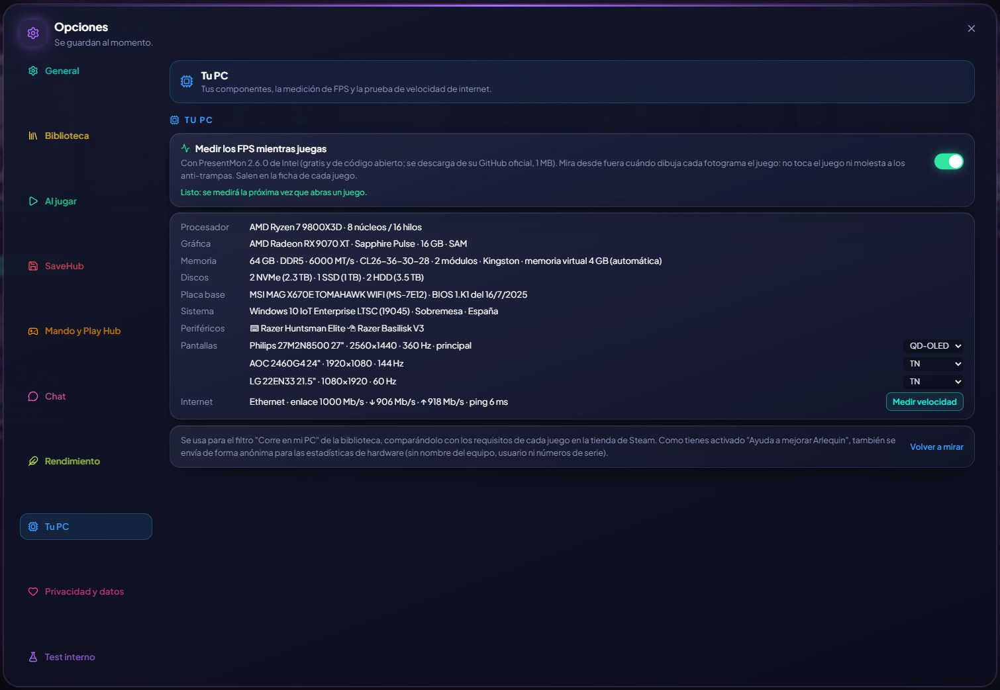

🖥️
あなたのPCをひと目で
パーツ、インターネット回線、そしてもっと活用するためにオンにしておくべき項目が分かります。
GameHubは、CPU、グラフィックスカード、メモリ(速度、レイテンシ、モジュール)、ドライブ、リフレッシュレートつきのディスプレイ、キーボードとマウス、そして約25秒のテストでインターネット速度を表示します。
さらに、つい設定し忘れがちな項目も知らせます。BIOSでXMPプロファイル(AMDのDDR5ではEXPO)がオフのためにメモリがパッケージの表記より遅く動いていないか、PCがResizable BAR(AMDではSmart Access Memory)に対応しているのに無効になっていないか。どちらも多くのゲームで追加費用なしにFPSが上がります。各メーカーのBIOSでの呼び方も案内します。
マザーボードのBIOSのバージョンと日付、グラフィックスカードの製造元(Sapphire、ASUS、MSIなど)も表示します。また、プレイ中やテスト中にWindowsがハードウェアエラー(WHEA)を訂正したり、グラフィックドライバーがハングしたりした場合は警告します。多くの場合、オーバークロックが不安定なサインです。
使い方
- オプション → あなたのPC。
- インターネットテストは「速度を測定」から(月1回の自動テストは、モバイルデータ通信では実行されません)。
- インターネットテストの所要時間が短くなり(約20秒)、「停止」ボタンが付きました。

✦ その他の機能